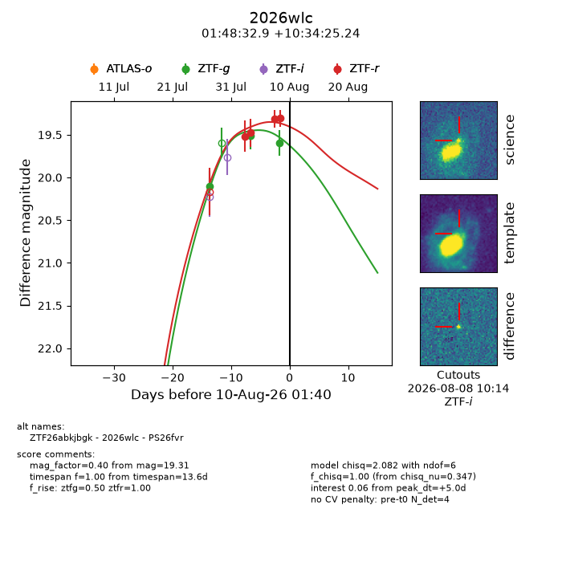
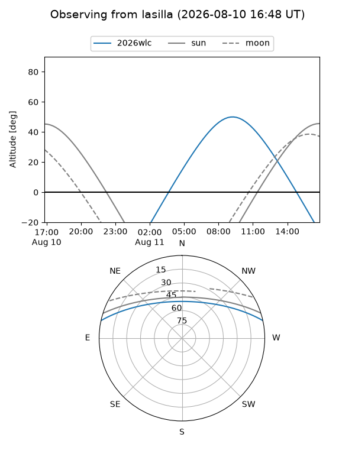
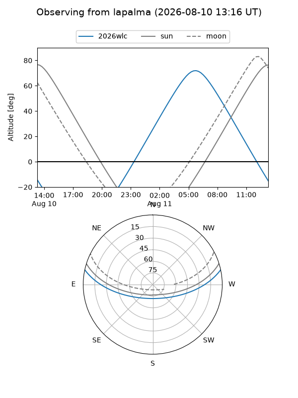
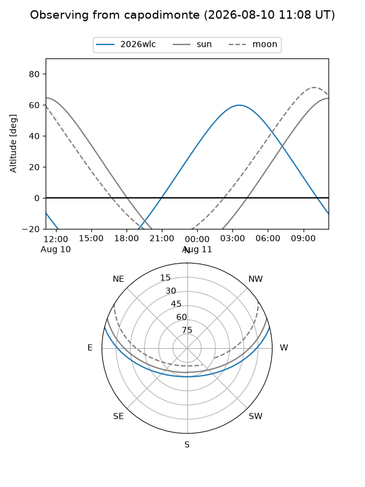
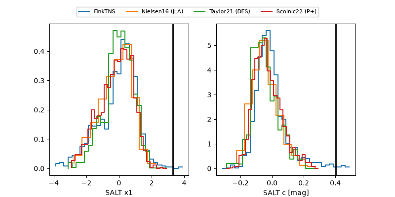

2026wlc
Target 2026wlc at 2026-08-10 13:37
Aliases and brokers:
FINK-ZTF: ztf.fink-portal.org/ZTF26abkjbgk
Lasair-ZTF: lasair-ztf.lsst.ac.uk/objects/ZTF26abkjbgk
ALeRCE-ZTF: alerce.online/object/ZTF26abkjbgk
YSE-PZ: ziggy.ucolick.org/yse/transient_detail/2026wlc
TNS name: wis-tns.org/object/2026wlc
Direct TNS query: direct search
alt names
ZTF26abkjbgk (ztf,fink_ztf)
2026wlc (tns,yse)
PS26fvr (panstarrs)
Coordinates:
equatorial (ra, dec) = 27.1371,+10.57368
equatorial (HMS+DMS) = 01:48:32.90,+10:34:25.24
galactic (l, b) = (145.0096,-49.83409)
Flags:
TNS type: nan
peak dt: +5.5
Photometry:
last ztfg=19.59, ztfr=19.31
3 ztfg, 4 ztfr detections
Lightcurve

Visibility



Additional plots
